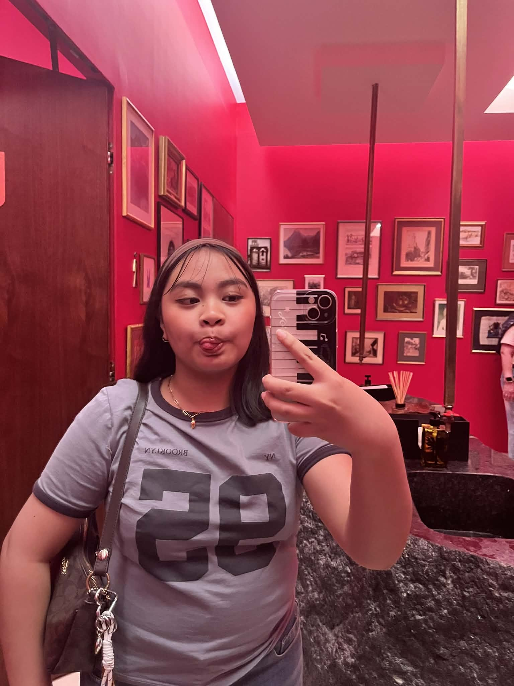

This website is beach-y themed as an inspiration from our previous web project about the song "Oceans & Engines" by Niki. We all had fun coding this website and we're really proud of our work. As a group, we worked together to design and code this project, combining our ideas to create a calm and aesthetic experience. Throughout the process, we learned how to collaborate, solve problems, and improve our coding skills. One of the challenges we faced was organizing our layout and making sure all elements were aligned properly. We solved this by experimenting with different CSS techniques and helping each other understand the code. Through this experience, we improved our teamwork and problem-solving skills. We are proud of what we created, and below are pictures taken when we were working as a group to code and design this website.

Thank you for taking the time to explore our website. We hope you enjoyed our work as much as we enjoyed creating it. :D
" Coding is actually fun and I realized how cool it is seeing everything I wrote actually work into a whole page " — Cueva, coded the home page " Coding, was hard at first, but after a while we will get used to it " — Katipunan, coded the contacts page & see more page CSS " Through coding, I learned how to be patient and persistent " — Maas, coded the contacts page CSS " Coding this made me feel like a computer engineering student :0 " — Mojica, coded the home page and see more page " At first, coding looked scary, but once I understood the basics, it felt like solving fun puzzles " — Polo, coded the contacts page CSS " Coding taught me to be patient and to never give up, even when things get difficult " — Ramilo, coded the contacts page " Coding is more than just words and lines on a screen, it is a mixture of thinking, having fun, and showing everyone your hard work through those "words and lines on the screen" " — Ricardo, coded the home page CSS " Coding this took a lot of time and patience, but you'll get through it by time. " — Solis, coded the home page CSS